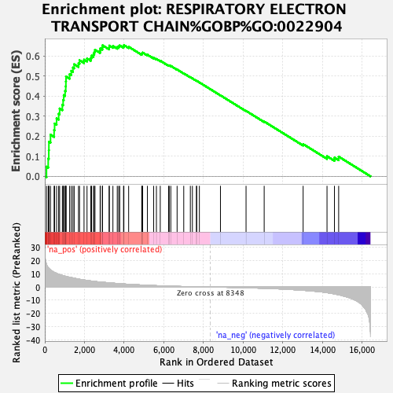
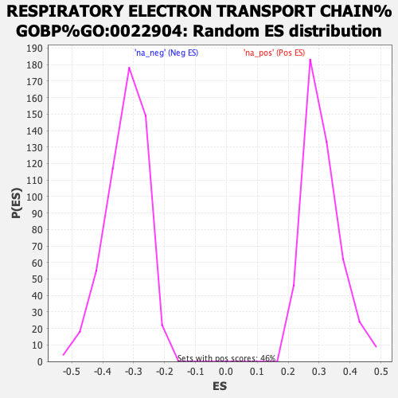

| Dataset | ranked_gene_list |
| Phenotype | NoPhenotypeAvailable |
| Upregulated in class | na_pos |
| GeneSet | RESPIRATORY ELECTRON TRANSPORT CHAIN%GOBP%GO:0022904 |
| Enrichment Score (ES) | 0.65344584 |
| Normalized Enrichment Score (NES) | 2.1232722 |
| Nominal p-value | 0.0 |
| FDR q-value | 0.003729536 |
| FWER p-Value | 0.003 |

| SYMBOL | RANK IN GENE LIST | RANK METRIC SCORE | RUNNING ES | CORE ENRICHMENT | |
|---|---|---|---|---|---|
| 1 | NDUFS8 | 85 | 17.372 | 0.0479 | Yes |
| 2 | UQCRC1 | 172 | 14.744 | 0.0878 | Yes |
| 3 | MT-ND4 | 201 | 14.208 | 0.1295 | Yes |
| 4 | MT-ND2 | 207 | 14.084 | 0.1723 | Yes |
| 5 | MT-ND1 | 288 | 13.009 | 0.2072 | Yes |
| 6 | UQCC3 | 469 | 11.213 | 0.2305 | Yes |
| 7 | MT-CO2 | 494 | 10.999 | 0.2627 | Yes |
| 8 | NDUFAF1 | 594 | 10.329 | 0.2882 | Yes |
| 9 | ETFB | 699 | 9.711 | 0.3115 | Yes |
| 10 | NDUFB10 | 748 | 9.481 | 0.3376 | Yes |
| 11 | NDUFV1 | 885 | 8.761 | 0.3561 | Yes |
| 12 | MT-CYB | 924 | 8.627 | 0.3802 | Yes |
| 13 | NDUFA3 | 955 | 8.510 | 0.4043 | Yes |
| 14 | NDUFS2 | 1024 | 8.242 | 0.4254 | Yes |
| 15 | MT-ND3 | 1056 | 8.092 | 0.4483 | Yes |
| 16 | NDUFB1 | 1063 | 8.069 | 0.4726 | Yes |
| 17 | NDUFS3 | 1070 | 8.025 | 0.4968 | Yes |
| 18 | COX6B1 | 1251 | 7.410 | 0.5084 | Yes |
| 19 | MT-CO3 | 1334 | 7.166 | 0.5253 | Yes |
| 20 | NDUFA5 | 1418 | 6.923 | 0.5414 | Yes |
| 21 | UQCR10 | 1480 | 6.704 | 0.5582 | Yes |
| 22 | NDUFS7 | 1699 | 6.040 | 0.5633 | Yes |
| 23 | HCCS | 1750 | 5.885 | 0.5783 | Yes |
| 24 | NDUFS6 | 1977 | 5.371 | 0.5809 | Yes |
| 25 | NDUFAB1 | 2128 | 4.993 | 0.5870 | Yes |
| 26 | COX4I1 | 2320 | 4.599 | 0.5893 | Yes |
| 27 | NDUFA1 | 2356 | 4.532 | 0.6011 | Yes |
| 28 | NDUFA10 | 2454 | 4.380 | 0.6085 | Yes |
| 29 | UQCRQ | 2494 | 4.294 | 0.6193 | Yes |
| 30 | NDUFA2 | 2529 | 4.246 | 0.6302 | Yes |
| 31 | COX7C | 2789 | 3.797 | 0.6260 | Yes |
| 32 | NDUFS5 | 2797 | 3.781 | 0.6371 | Yes |
| 33 | COX5B | 2900 | 3.630 | 0.6420 | Yes |
| 34 | COX5A | 2910 | 3.617 | 0.6525 | Yes |
| 35 | MT-CO1 | 3242 | 3.158 | 0.6419 | Yes |
| 36 | CYC1 | 3252 | 3.146 | 0.6510 | Yes |
| 37 | NDUFB3 | 3433 | 2.939 | 0.6489 | Yes |
| 38 | NDUFB7 | 3652 | 2.664 | 0.6438 | Yes |
| 39 | UQCRH | 3724 | 2.584 | 0.6473 | Yes |
| 40 | NDUFA6 | 3776 | 2.529 | 0.6519 | Yes |
| 41 | COX7A2 | 3969 | 2.339 | 0.6473 | Yes |
| 42 | NDUFC1 | 3986 | 2.318 | 0.6534 | Yes |
| 43 | NDUFB2 | 4226 | 2.078 | 0.6452 | No |
| 44 | UQCRB | 4885 | 1.549 | 0.6097 | No |
| 45 | COX7B | 4906 | 1.524 | 0.6131 | No |
| 46 | SDHC | 4932 | 1.506 | 0.6162 | No |
| 47 | NDUFA4 | 5172 | 1.335 | 0.6056 | No |
| 48 | ETFA | 5485 | 1.119 | 0.5900 | No |
| 49 | NDUFA8 | 5626 | 1.039 | 0.5846 | No |
| 50 | MT-ND4L | 5819 | 0.936 | 0.5757 | No |
| 51 | UQCRHL | 6237 | 0.724 | 0.5524 | No |
| 52 | UQCRFS1 | 6271 | 0.704 | 0.5525 | No |
| 53 | NDUFB9 | 6351 | 0.671 | 0.5498 | No |
| 54 | CYCS | 6668 | 0.523 | 0.5320 | No |
| 55 | PPARGC1A | 7003 | 0.374 | 0.5127 | No |
| 56 | SDHB | 7336 | 0.258 | 0.4932 | No |
| 57 | COX6C | 7439 | 0.224 | 0.4877 | No |
| 58 | NDUFB6 | 7643 | 0.164 | 0.4757 | No |
| 59 | NDUFB4 | 7655 | 0.162 | 0.4756 | No |
| 60 | MT-ND5 | 7791 | 0.124 | 0.4677 | No |
| 61 | ETFDH | 8853 | -0.114 | 0.4031 | No |
| 62 | NDUFV3 | 10143 | -0.526 | 0.3259 | No |
| 63 | UQCRC2 | 11057 | -0.944 | 0.2729 | No |
| 64 | NDUFS4 | 13020 | -2.442 | 0.1604 | No |
| 65 | NDUFS1 | 14224 | -4.253 | 0.0998 | No |
| 66 | NDUFA12 | 14599 | -5.236 | 0.0929 | No |
| 67 | MT-ND6 | 14811 | -5.867 | 0.0979 | No |
